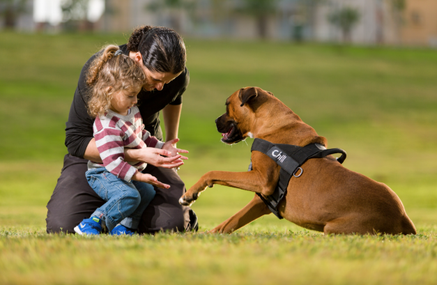

כלב אחד פותח שיחה שלמה
מפגשים קבוצתיים ואישיים לילדים, למשפחות ולמבוגרים — ואילוף כלבים לבית. עם כלבים רגועים שאוהבים אנשים, ועם המון סבלנות.



ארבע דרכים לעבוד יחד
קבוצות ילדים
מפגש שבועי קבוע בגן, בבית ספר או במסגרת. ביטחון, תקשורת ויכולת לווסת — דרך משימות עם הכלב.
הורים וילדים
מפגש משותף שבו הכלב הוא הסיבה לדבר. מתאים למעברים, לחרדות ולתקופות שבהן קשה למצוא שפה משותפת.
קשישים ודיור מוגן
ביקורים קבועים בקבוצה קטנה. מגע, זיכרונות ותנועה — בקצב של הדיירים ולא בקצב שלנו.
אילוף כלבים לבית
גור חדש, משיכה ברצועה, חרדת נטישה או כלב שלא מסתדר עם הילדים. עובדים עם כל המשפחה, לא רק עם הכלב.

קודם מכירים. אחר כך עובדים.
עינב מימון היא מאלפת כלבים וכלבנית טיפולית מוסמכת, עם ניסיון בעבודה עם ילדים, משפחות ואוכלוסיות בעלות צרכים מיוחדים. היא עובדת בעיקר בקבוצות, עם הכלבים שלה, וכרגע משלימה תעודת CBT.
45 דקות, שלושה חלקים

פגישה
הכלב נכנס לחדר, כולם יושבים במעגל. אף אחד לא חייב לגעת.

משימה
כל ילד מקבל תפקיד — להוביל, להאכיל, ללמד פקודה. ההצלחה מיידית ונראית.

פרידה
מסכמים מה קרה, נפרדים מהכלב, ומסמנים למה נחזור בפעם הבאה.
שלושה כלבים, לא אותו תפקיד
חלקם עברו אילוף לעבודה טיפולית, וחלקם פשוט כלבים רגועים ונוחים שמתאימים למשימות עם ילדים. עינב מתאימה את הכלב לקבוצה, ולא להפך.

[ מקום להמלצה — משפט או שניים מהורה, מגננת או ממנהלת מסגרת. ]
[ מקום להמלצה — אפשר גם משפט קצר של ילד. ]
עוד לא נקבע
בגרסה הסופית כאן ייכנסו טווחי מחיר למפגש בודד ולסדרה, ורשימת היישובים שעינב מגיעה אליהם.
משאירים טלפון, עינב חוזרת אליכם
שיחת היכרות קצרה, בלי התחייבות: מה קורה אצלכם, מה אפשר לעשות עם כלב, ואיך נראית סדרת מפגשים.
הכף, וארבע האצבעות שלה
בכף יש ארבע אצבעות. שלוש מהן הן הכלב, והרביעית היא מי שיושב מולו — הילד, ההורה, הדייר. לכן היא היחידה שצבועה אחרת, ולכן היא נכנסת אחרונה באנימציית הפתיחה: קודם מגיע הכלב, ואז מצטרף האדם.